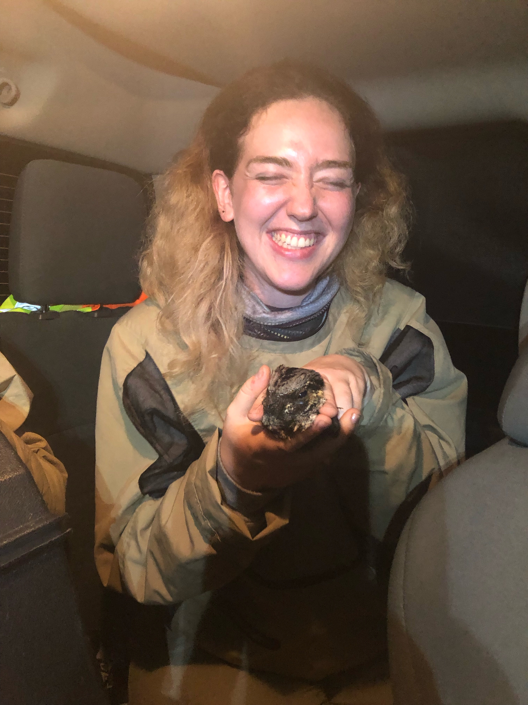
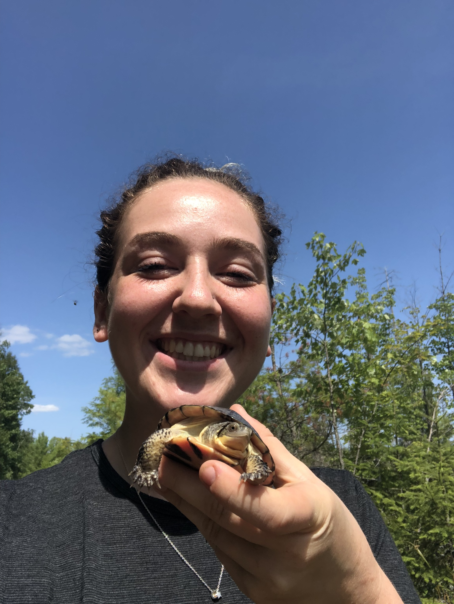
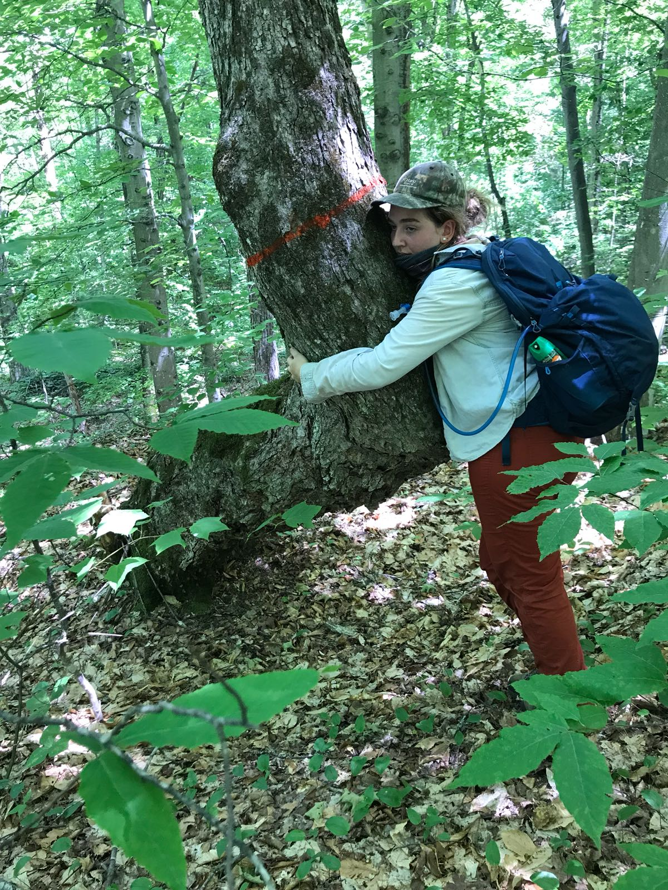

<---Welcome to the journey through my life! Adjuist Screen for viewing
Hi there I'm Michelle! I have a Bachelor of Design and Indigenous Studies, I got a job working as a UX/UI designer...very quickly realized it was terrible and I made a grave mistake. I packed up from Toronto and moved back home to bancroft where I got a job as a receptionist at a mineral tour place. From here I moved up and became a field geologist assistant which I did for 2 seasonal years. This experience along with my Indigenous studies education I got a student contract with the MNRF which turned into a seasonal contract collecting cultural heritage data. Now I am in this course working my butt off and having a much better time than living in Toronto.
Enjoy this video of my thesis burning :)
MAGICAL FOREST ADVENTURES
Heres a map of my favourite place.If you don't like maps, than I dont think we can be friends



You found the last page! You won the puzzel you did know you were playing :)